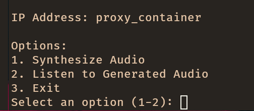
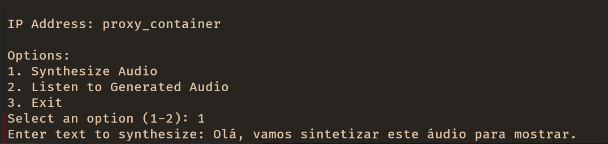
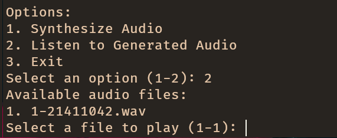

PI24 - Real-Time Speech Synthesis
Authors:
Introduction
The goal of this project is to develop a low-latency, high-quality audio synthesis real-time text-to-speech (TTS) system. The project is set up to take advantage of microservices concepts in order to facilitate modularity, scalability, and adaptability. The architecture guarantees effective functioning and facilitates future extensions by breaking the system up into discrete parts, each of which is in charge of carrying out particular functions.
The system was designed to be able to run on a large variety of hardware, from small devices to large cloud servers.
Project Scope
This project's main objective was to create a reliable TTS system that could perform the following tasks:
Process text inputs:
- Could accept inputs in the form of structured SSML (Speech Synthesis Markup Language) or natural language text.
- Prepares the input for synthesis by apllying advanced normalization and techniques.
Generate Real-Time Audio:
- Capable of producing audio streams with minimal latency.
- Ensures high-quality audio output, with a focus on naturalness and intelligibility.
Supports Modular Deployment:
- The system is designed to be modular, allowing for easy integration of new components and updates on existing ones.
- The system can be deployed in a microservices architecture, allowing for scalability and adaptability.
Utilizability:
- The system is designed to be usable by a wide range of users, from developers to end-users.
- The system offers a simple API for easy integration into other systems.
Facilitates Customization:
- The system is designed to be easily customizable, allowing for the integration of new voices, languages, and other features.
- The system is designed to be easily extendable, allowing for the integration of new components and features.
The project was designed to meet real-world demands for customizable, efficient, and scalable voice synthesis, making it ideal for applications such as virtual assistants, customer service bots, and accessible technology solutions.
Architecture
The system was designed to be simple, modular, and scalable. The architecture is based on a microservices approach, with each component responsible for a specific task. This allows for easy integration of new components and updates on existing ones. The system is designed to be able to run on a large variety of hardware, from small devices to large cloud servers.
In the diagram above, it is possible to see the main components of the system:
- Black Arrows: Represent the flow of "text" between the components.
- Blue Arrows: Represent the flow of audio between the components.
- Components:
- Frontend: The user interface, responsible for sending requests to the api and displaying the results.
- API: One of the possible interfaces of the system, responsible for processing requests from the frontend and sending them to the server.
- Client: The client is a Terminal-based interface that allows users to interact with the system without being dependent on the API.
- Proxy: The proxy is responsible for routing requests to the server and returning the results to the client and/or API.
- Server: The server is responsible for processing requests from the proxy and generating the audio output.
- Normalizer: The normalizer is responsible for processing the input text and preparing it for synthesis.
Docker
Each component is incapsulated in a Docker container, allowing for easy deployment and scaling. The provided docker-compose file allows for easy deployment of the system on a single machine.
Flow
The system, as designed, is composed of several components, each responsible for a specific task.
App Flow
Based on the architecture diagram, the flow of the system is as follows:
Frontend API flow:
-
The user interacts with the system through the Frontend, which sends requests to the
API. -
The API processes the requests and sends them to the
Proxy. -
The Proxy routes the requests to an available
Server. -
The Server sends the text input to the
Normalizer. -
The Normalizer processes the input and prepares it for synthesis and sends it back to the
Server. -
The Server uses the normalized text to generate the audio. Then sends it back to the
Proxy. -
The Proxy returns the results to the
API. -
The API sends the results back to the
Frontend, which displays the results to the user.
Client flow:
-
The user interacts with the system through the Client , which sends requests directly to the
Proxy. -
The Proxy routes the requests to an available
Server. -
The Server sends the text input to the
Normalizer. -
The Normalizer processes the input and prepares it for synthesis and sends it back to the
Server. -
The Server uses the normalized text to generate the audio. Then sends it back to the
Proxy. -
The Proxy returns the results to the
Client. -
The Client displays the results to the user.
Data Flow
The flow of data between these components is crucial for the system to function correctly. The following diagram illustrates the flow of data between the components of the system:

As the diagram shows, the data flow is as follows:
1. Input:
The system accepts two types of inputs:
-
Natural Text: Plain text provided by the user.
-
SSML Text: Structured input using Speech Synthesis Markup Language (not currently implemented).
2. Normalizer:
The input text is sent to the Normalizer, which standardizes it for further processing. For example:
- Expanding abbreviations.
- Converting numbers into words.
3. TTS Model:
The normalized text is then processed by the TTS Model, which converts the text into audio data. This includes:
- Generating phonetic representations.
- Applying prosody to ensure naturalness.
4. Output:
The audio data is finalized and saved as an output file (e.g., .wav or .mp3), ready for playback and/or further processing.
Current Limitations
SSML Support: While the diagram includes an SSML Parser, this functionality is not yet implemented. All inputs must currently be provided as plain text.
Streaming: The system generates complete audio files and sends them directly to the user, but streaming capabilities could be added in future iterations.
Communication
Main Components Communication
To handle the comunications between the main components, the system uses gRPC as the communication protocol. This allows for fast and efficient communication between the components, ensuring that the system can handle the real-time requirements of the audio synthesis process.
The use of gRPC also allows for a technology-agnostic approach to the system, as it can be used with a wide variety of programming languages and platforms.
Frontend API Communication
To handle the communication between the Frontend and the API, the system uses HTTP as the communication protocol. This allows for easy integration with web-based applications and ensures that the system can be easily accessed by a wide variety of devices.
Requirements
The system requirements define the functional and non-functional aspects that the text-to-audio conversion system must meet. These requirements guide the development process, ensuring that the system meets the user's needs and expectations.
Functional Requirements
-
Text-to-Audio Conversion: The system must generate audible audio from text inputs.
-
Integration: The system must integrate seamlessly with existing virtual assistant infrastructures.
-
Language Support: The system must support generating audio in Portuguese.
-
Voice Customization: Users must be able to choose and customize voices for their needs.
-
Dynamic Intonation: The system must adjust intonation to emphasize keywords in responses.
-
Emotion Adaptation: The system should modify the voice's tone based on conversational context.
-
Multi-Format Text Support: Inputs in HTML, Markdown, plain text, and emails must be processed effectively.
Non-Functional Requirements
-
Performance: The system must generate responses in under 1.5 seconds.
-
Scalability: It must support multiple simultaneous users without degradation.
-
Availability: The system must be operational 99% of the time.
-
Clarity: The generated audio must be clear and easy to understand.
-
Naturalness: Voices must sound natural and human-like, avoiding robotic tones.
-
Redundancy: Mechanisms should ensure uninterrupted service even in case of failures.
-
Maintainability: The system must have modular, well-documented code for easy updates.
-
Multilingual Capability: It should support multiple languages to cater to diverse markets.
-
Legal Compliance: All voices used must adhere to licensing and copyright laws.
Constraints
-
Integration with Virtual Assistants: The system must integrate seamlessly with existing virtual assistants, preserving user experience.
-
Independent Deployment: It must operate autonomously without third-party dependencies.
How to install
This guide will walk you through the steps to install the application.
:no_entry: At least 25GB of free space is required to install the application. :no_entry:
Components
Docker
For ease of use, we have provided a Dockerfile that contains all the necessary dependencies to run the application. This is the recommended way to run the application.
Prerequisites
Installation
-
Clone the repository:
git clone https://github.com/ddu72/PI -
Change to the project directory:
cd PI -
Build the Docker image:
docker-compose build -
Start the target services:
docker-compose up [proxy, server, api, normalizer] -d!Note: The
-dflag is optional and runs the services in detached mode.!Note: The each service will start its dependencies automatically, for example, the
proxyservice will start all theserverservices and theserverservice will start thenormalizerservice.
The services are now running and ready to be used. See How to Use for more information.
Stopping the Services
To stop the services, run the following command:
docker-compose down
Removing the Docker Image
To remove the Docker image, run the following command:
docker-compose down --rmi all
Standalone Program
The Intelex Module can be used as a standalone program (Single Service).
Prerequisites
Installation
-
Clone the repository:
git clone https://github.com/ddu72/PI -
Change to the project directory:
cd PI -
Download the pre-trained models:
sh download_models.sh!Note: This will download the pre-trained models to the
modeldirectory. This may take a while depending on your internet connection. (Aprox. 7GB) -
Install the requirements:
pip install -r environments/server_requirements.txt
The standalone program is now ready to be used. See How to Use for more information.
How to use
This section will guide you through the process of using the system, either as a standalone program or as a dockerized version.
Components
Docker
To run the application (Client-side) using Docker, follow the steps below.
Prerequisites
- Docker
- Docker Compose
- Docker images built (see How to Install)
Usage
-
Verify that the Docker images have been built and the "main" services are running:
docker compose ps!Note: The output should be similar to the following:
PI> docker compose ps NAME IMAGE COMMAND SERVICE CREATED STATUS PORTS normalizer_container tts-agentifai:normalizer "python app_normaliz…" normalizer 13 seconds ago Up 12 seconds 50051/tcp proxy_container tts-agentifai:proxy "python app_proxy -d" proxy 13 seconds ago Up 11 seconds 0.0.0.0:50051->50051/tcp, :::50051->50051/tcp server_container1 tts-agentifai:server "python app_server" server_1 13 seconds ago Up 12 seconds 50051/tcp server_container2 tts-agentifai:server "python app_server" server_2 13 seconds ago Up 12 seconds 50051/tcp server_container3 tts-agentifai:server "python app_server" server_3 13 seconds ago Up 12 seconds 50051/tcp!Note: The
normalizer_container,proxy_container, andserver_containerXservices should be running. -
Run endpoints:
-
Client:
docker compose run -e PROXY_SERVER_PORT={PROXY_SERVER_PORT} -e PROXY_SERVER_ADDRESS={PROXY_SERVER_ADDRESS} client!Note: The
PROXY_SERVER_PORTandPROXY_SERVER_ADDRESSare optional and default to50051andproxy_container, respectively.!Note: The client will be available in the opened terminal.
-
Frontend and API:
docker compose run frontend!Note: The frontend will be available at
http://localhost:3000and the API will be available athttp://localhost:5000.
-
-
The output will be displayed in the terminal.
Standalone Usage
This allows the user to synthesize text using the Intelex Module. This version is a standalone (Single Service) version of the implementation.
Prerequisites
Steps
-
Run the program:
python intlex.py [TEXT] [CONFIG] --output [OUTPUT] --lang [LANG] --kwargs [KWARGS] -
The output will be saved in the output file if provided, otherwise it will be stored in the default location.
Arguments and Options
For a more detailed explanation of the arguments and options for the standalone version, see the Intlex Model section.
TEXT (Required)
This argument is used to pass the text to be synthesized.
CONFIG (Optional)
This argument is used to pass the configuration file. The default configuration file is in the config directory.
OUTPUT (Optional)
This argument is used to pass the output file. The default output file is output.wav.
LANG (Optional)
This argument is used to pass the language of the text to be synthesized. The default language is pt.
KWARGS (Optional)
This argument is used to pass additional arguments to the synthesizer. The arguments should be passed as a dictionary in the following format:
--kwargs '{"temperature":0.01,"top_p":0.4,"top_k":60}'
Updating
Model training
The xtts_v2_pt_colab_pro_notebook.ipynb notebook is a comprehensive script designed for fine-tuning and training the XTTS (Extended Text-to-Speech) model. It is structured for execution in Google Colab or locally, leveraging a dataset in the LJSpeech format and integrating with the Coqui TTS framework for model training and management.
Dataset Format
The XTTS training process requires the dataset to be structured following the LJSpeech format, adapted for single-speaker audio data. Below is a detailed explanation of the format and its requirements.
Directory Structure
The dataset should follow this structure:
dataset
├── metadata.csv
└── wavs
├── audio_0.wav
├── audio_1.wav
├── audio_2.wav
├── audio_3.wav
├── audio_4.wav
├── audio_5.wav
├── audio_6.wav
├── audio_7.wav
├── audio_8.wav
├── audio_9.wav
└── audio_N.wav
Components
-
metadata.csv- A CSV file that maps each audio file to its corresponding text transcription.
- Format: Each row contains:
filename(without extension): The name of the audio file.transcription: The text spoken in the audio file.normalizer transcription: The text spoken in the audio file.- Example:
audio_0|Hello, welcome to the XTTS training system.|Hello, welcome to the XTTS training system. audio_1|This is an example of a training sentence with numbers 12345.| This is an example of a training sentence with numbers one two three four five. audio_n|High-quality audio is essential for better results.|High-quality audio is essential for better results.
- The delimiter is a pipe (
|).
-
wavs/Directory- Contains all audio files in WAV format.
- Requirements:
- Sampling rate: 22,050 Hz (recommended).
- Single-channel (mono) audio.
- Bit depth: 16-bit PCM encoding.
Requirements for Training
- The dataset must consist of:
- Single Speaker: All audio recordings must originate from the same speaker to ensure consistency in the model's output.
- Clear Transcriptions: Text transcriptions should accurately match the spoken content in the audio files. Any incorrectly text matched will "Poison" the model.
- Audio file naming should correspond to the
filenamecolumn in themetadata.csvfile.
Example Dataset Entry
For the dataset structure shown above, the metadata.csv might look like this:
audio_0|Hello, welcome to the XTTS training system.|Hello, welcome to the XTTS training system.
audio_1|This is an example of a training sentence with numbers 12345.| This is an example of a training sentence with numbers one two three four five.
audio_n|High-quality audio is essential for better results.|High-quality audio is essential for better results.
Notes
- Ensure all filenames and paths are consistent between
metadata.csvand the audio files. - Verify the audio quality and transcriptions for best results during training.
- If using a dataset in another format, preprocess it into this structure before starting training.
File Structure and Execution Flow
1. Environment Setup
- Dependency Installation:
- Installs necessary tools:
espeak-ng: For phoneme generation in Portuguese.ffmpeg: For audio processing.
- Clones and installs the Coqui TTS repository to provide training utilities.
- Ensures all dependencies are installed with pip.
- Installs necessary tools:
- Environment Variables:
- Defines key dataset and model paths:
DATASET_URL = "http://mayorx.xyz/Media/agentifai/podcast_dataset.zip" DATASET_PATH = "podcast_dataset.zip" DATASET_DIR = "dataset/" DATASET_NAME = "bitalk_podcast" DATASET_LANG = "pt"
- Defines key dataset and model paths:
2. Dataset Management
- Dataset Download and Preparation:
- Fetches the dataset from a predefined URL and extracts it into a structured directory.
- Supports single-speaker datasets formatted similarly to LJSpeech:
- WAV audio files.
- Corresponding metadata with text transcripts.
- Input Voice Configuration:
- Allows downloading or setting input voices for use during fine-tuning.
- Commands used:
wget $DATASET_URL -O $DATASET_PATH unzip $DATASET_PATH rm $DATASET_PATH
3. Model Configuration
-
Trainer Setup:
- Imports and configures
TrainerandTrainerArgsfrom Coqui TTS to manage the training process. - Defines
BaseDatasetConfigto specify dataset properties.
- Imports and configures
-
Logging and Checkpoints:
- Logs training progress using TensorBoard.
- Saves model checkpoints to a defined directory.
-
Sample Configuration:
RUN_NAME = "XTTS_FineTuned" PROJECT_NAME = "XTTS_trainer" DASHBOARD_LOGGER = "tensorboard" CHECKPOINT_DIR = "./checkpoints"
4. Training Execution
- Executes the training loop with Coqui TTS, fine-tuning the model based on the specified dataset.
- Allows flexibility in hyperparameters for optimization.
5. Output
- Model Artifacts:
- Fine-tuned XTTS model saved in the checkpoint directory.
- Logs:
- Training metrics and progress logged for monitoring via TensorBoard.
Prerequisites
Hardware
- GPU Required: A CUDA-enabled GPU is strongly recommended for efficient training.
Software
- Python 3.x.
- Necessary Python packages installed:
espeak-ngffmpegtorch,numpy, and other dependencies via Coqui TTS.
Dataset
- A dataset formatted similarly to LJSpeech:
- Audio files in WAV format.
- A metadata file containing transcripts for each audio file.
Usage Instructions
-
Setup Environment:
- Install the required dependencies by running the notebook's initial cells.
-
Download Dataset:
- Provide a dataset URL or manually place your dataset in the
dataset/directory.
- Provide a dataset URL or manually place your dataset in the
-
Configure Training:
- Adjust the training parameters in the notebook as needed:
- Dataset path.
- Checkpoint directory.
- Logging options.
- Adjust the training parameters in the notebook as needed:
-
Run Training:
- Execute the training cells sequentially.
-
Monitor Progress:
- Use TensorBoard to visualize training metrics.
-
Save and Deploy:
- Use the final model checkpoint for deployment or further evaluation.
System Components
In this section, we will discuss the system components, how they function, and how they interact with each other.
Components
Communication
The components communicate with each other in the following ways:
- With the use of GRPC's:
API<--->ProxyClient<--->ProxyProxy<--->ServerServer<--->Normalizer
- With the use of HTTP Requests and Responses:
Frontend<--->API
Intlex Standalone Module
The Intlex Module serves as the standalone implementation of the text-to-speech system, allowing users to directly process text and generate audio files without using the microservices architecture. It provides flexibility for single-instance use cases.
Usage
To use the Intlex Module, you can run the following command:
python intlex.py [TEXT] [CONFIG] --output [OUTPUT] --lang [LANG] --kwargs [KWARGS]
The output will be saved in the output file if provided, otherwise it will be stored in the default output file.
Arguments and Options
TEXT: Text to be synthesized (required)CONFIG: Configuration file (optional)OUTPUT: Output file (optional)LANG: Language [pt, en] (optional)KWARGS: Additional arguments (optional)
Options:
Configuration File
The configuration file contains the settings for the synthesis process, such as the voice to clone, model information and configuration. If not provided, the default configuration will be used.
{
"normalization_config": "config/normalization_rules.toml",
"audio_path": {
"pt": "inputs/voices/marcelo.wav",
"en": "inputs/voices/eng_morgan_freeman.wav"
},
"storage_directory": "inputs/voices",
"xtts_config": "model/training/GPT_XTTS_Finetuned/config.json",
"model": {
"checkpoint_dir": null,
"eval": true,
"strict": true,
"speaker_file_path": null,
"checkpoint_path": "model/training/GPT_XTTS_Finetuned/best_model.pth",
"vocab_path": "model/training/XTTS_v2.0_original_model_files/vocab.json",
"use_deepspeed": false
}
}
Each field in the configuration file is described below:
-
normalization_config: Path to the normalization configuration file to be used by the model -
audio_path: Default input voices for conversion, the field is a dictionary with the keys being the voices' languages and the values being the paths to the audio filespt: Path to the Portuguese reference audio fileen: Path to the English reference audio file
-
storage_directory: Path to the folder where the reference audio files are stored -
xtts_config: Path to the XTTS configuration file to be used by the trained model -
model: Model configuration to be used for conversion, the fields are according to the trained model to facilitate configurationcheckpoint_dir: Path to the directory where the model checkpoints are storedeval: Whether the model is in evaluation modestrict: Whether to strictly enforce the model configurationspeaker_file_path: Path to the file containing the speaker informationcheckpoint_path: Path to the model checkpoint filevocab_path: Path to the vocabulary fileuse_deepspeed: Whether to use DeepSpeed for training
Language
The language option allows the user to specify the language of the text to be synthesized. The available languages are:
pt: Portugueseen: English
The model suports more languages, but the available voices are only in Portuguese and English. If the user wants to use another language, they must provide the voice file and update the configuration file accordingly.
Additional Arguments for the voice synthesis
The kwargs option allows the user to specify additional arguments for the voice synthesis process. The available arguments are:
length_penalty: Length penalty for the synthesis processrepetition_penalty: Repetition penalty for the synthesis processtop_k: Top k tokens to consider for the synthesis processtop_p: Top p tokens to consider for the synthesis processdo_sample: Whether to sample the tokenstemperature: Temperature for the sampling process
The default values for the additional arguments are:
{
"length_penalty": 1.0,
"repetition_penalty": 2.5,
"top_k": 40,
"top_p": 0.5,
"do_sample": true,
"temperature": 0.7
}
The format for the kwargs option is a dictionary with the keys being the argument names and the values being the argument values.
py intlex.py TEXT --kwargs '{"temperature":0.01,"top_p":0.4,"top_k":60}'
This will set the temperature to 0.01, top_p to 0.4 and top_k to 60.
Example
To synthesize the text "Hello, World!" in English, you can run the following command:
python intlex.py "Hello, World!" --lang en
This will generate an audio file with the synthesized speech in English.
Frontend
The frontend is the user interface of the application. It is responsible for rendering the user interface and handling user interactions. The frontend is built using React.
Requirements
The frontend requires the following:
-
ENV: The environment variables must be defined in the
.envfile or as environment variables. The following variables must be defined:PORT: The port on which the frontend will run.REACT_APP_API_IP_PORT: The port of the API server.REACT_APP_API_IP_ADDRESS: The address of the API server.
-
Dependencies: The frontend requires the following dependencies:
Usage
To run the frontend, you can do the following:
- Define the api address and port in the
.envfile or as an environment variable. The serve port can also be defined. For example:export PORT=3000 export REACT_APP_API_IP_PORT=5000 export REACT_APP_API_IP_ADDRESS={api_address} - Install the required dependencies by running:
cd app npm install - Start the frontend by running:
cd app npm start
The frontend will be available at http://localhost:3000.
Comunication
The frontend communicates with the API to send the text to be synthesized and receive the audio file. The API is responsible for processing the text and generating the audio file.
The frontend sends a POST request to the API with the text to be synthesized. The API processes the request and when completed, the audio file is sent to the frontend. The frontend then receives the audio file and displays it to the user.
Request
{
"text":"O exame de Época Especial realiza-se no dia 10 de Julho, às 9:00, na sala Ed.2 1.03.",
"language":"pt"
}
Response
[BINARY DATA]
Aspect
The frontend is composed of only one page, which contains the text input and the audio player. The user can input the text to be synthesized and click the "Enviar" button to generate the audio file. The audio player will display the audio file and allow the user to play, pause, and stop the audio.


API
The API is a RESTful service that provides access to the system's functionality. It is built using Flask, a Python microframework for web development. The API is responsible for handling requests from the client, processing them by sending them to the proxy, and returning the appropriate response.
Endpoints
The API has the following endpoint:
/api/tts: This endpoint is used to syntesize text to speech. It accepts a POST request with a JSON payload containing the text to be synthesized and the language to use. The API sends the text to the proxy, which then sends it to the TTS engine. The TTS engine synthesizes the text and returns the audio file, which is then returned to the client.
POST /api/tts
Request
{
"text": "Hello, how are you?",
"language": "en"
}
Response
UklGRvYAAABXQVZFZm10...IBAAAAABAAEAQB8AAEAfAAAA==
Requirements
The API requires the following:
-
ENV: The environment variables must be defined in the
.envfile or as environment variables. The following variables must be defined:PORT: The port on which the API server will run.PROXY_SERVER_PORT: The port on which the proxy server is running.PROXY_SERVER_ADDRESS: The address of the proxy server.
-
Dependencies: The API requires the following dependencies:
Usage
To use the API, you need to start the Flask server by doing the following:
-
Define the proxy address and port in the
.envfile or as an environment variable. The serve port can also be defined, just remember to update the frontendREACT_APP_API_PORTto the correct one. For example:export PORT=5000 export PROXY_SERVER_PORT=50051 export PROXY_SERVER_ADDRESS={proxy_address} -
Install the required dependencies by running:
pip install -r enviroments/api_requirements.txt -
Start the Flask server by running:
python app_api
The API will start running on the specified port, and you can now send requests to it.
Client
The client is the user interface of the application. It is a terminal-based application that allows users to interact with the system. The client is responsible for sending requests directly to the Proxy and displaying the responses to the user.
Functionality
The client provides the following functionality:
-
User authentication: The client allows users to log in to the system using their
token. -
User interaction: The client provides a command-line interface for users to interact with the system. Users can send requests to the Proxy and receive responses.
-
Response display: The client displays the responses received from the Proxy in a user-friendly format.
Implementation
The client is a rudimentary terminal-based application made in Python. It reads user input from the command line, sends requests to the Proxy, and displays the responses to the user. The client uses the grpc library to communicate with the Proxy using gRPC.
The client is a standalone component that can be run on any machine with Python installed. It requires only the grpcs module/folder to be present in the same directory.
Requirements
The client requires the following dependencies:
- Python 3.12 or higher
- Python packages
Usage
To run the client, follow these steps:
- Clone the repository:
git clone https://github.com/ddu72/PI - Define the environment variables:
export USER_TOKEN={user_token} export PROXY_SERVER_PORT={proxy_host} export PROXY_SERVER_ADDRESS={proxy_port} - Install the required packages:
pip install -r environments/client_requirements.txt - Run the client:
python app_client - Follow the instructions displayed on the terminal to interact with the system.
Aspect



Normalization
The Normalization Service is a microservice responsible for pre-processing text inputs to ensure a standardized and consistent format before they are sent to the TTS synthesis process. It uses a modular design, allowing flexibility in managing text transformations such as punctuation adjustments, number-to-word conversions, date formatting, and abbreviation expansions.
This service supports multiple languages and can be configured via a rules.toml file, making it easy to adapt to new use cases or languages.
Functionality
Key Features:
-
Text Normalization:
Converts raw text into a predictable, synthesis-ready format. Handles various textual elements including punctuation, numbers, and abbreviations. -
Multi-Language Support:
Adapts normalization rules based on the language (e.g.,ptfor Portuguese,enfor English). -
gRPC Communication:
Offers aNormalizemethod to process text requests from the TTS server and returns aNormalizeResponsewith the transformed text. -
Modularity:
Rules are implemented as independent modules, which can be enabled or disabled through the configuration file.
Architecture
Core Logic:
- The
Normalizerclass is the entry point for applying normalization rules. - Rules are dynamically loaded based on the configuration file.
Rule Modules:
- Each rule is a separate class inheriting from a
NormalizationRulebase class.
gRPC Service:
- File:
normalizer.py - Defines the
NormalizerServiceand handles requests via gRPC.
Implementation
File: normalizer.py
The NormalizerService initializes the Normalizer class with a rule configuration and exposes the Normalize method:
class NormalizerService(normalizer_pb2_grpc.NormalizerServiceServicer):
def __init__(self, args):
if args.rules is None:
args.rules = NORMALIZER_RULES
self.normalizer = Normalizer(args.rules)
def Normalize(self, request, context):
normalized_text = self.normalizer.normalize_text(request.text.strip())
return normalizer_pb2.NormalizeResponse(normalized_text=normalized_text)
The service listens on a configurable port (NORMALIZER_PORT) and communicates with other components using gRPC.
Rules
Punctuation Handling
- File:
punctuation_handling.py - Functionality: Removes or replaces specified punctuation marks and reduces multiple consecutive spaces to a single space.
Example:
Input: "Olá, mundo!"
Output: "Olá mundo"
Configuration (rules.toml):
[rules.punctuation_handling]
enabled = true
remove = ["!", "?"]
replace_with_space = [",", ";"]
Number Conversion
- File:
number_conversion.py - Functionality: Converts numbers into words and handles percentages, ordinals, fractions, and ranges.
Example:
Input: "25%" (language: pt)
Output: "vinte e cinco por cento"
Configuration (rules.toml):
[rules.number_conversion]
enabled = true
detect_percentage = true
detect_years = true
detect_ordinal = true
handle_fractions = true
handle_ranges = true
handle_currency = true
supported_currency = ["USD", "EUR"] # Example
currency_map = "path/to/currency_map.json"
type = "long" # Example
Date Conversion
- File:
date_conversion.py - Functionality: Converts date formats into words and supports partial dates (e.g., "January 2020").
Example:
Input: "2022-12-25"
Output: "vinte e cinco de dezembro de dois mil e vinte e dois"
Configuration (rules.toml):
[rules.date_conversion]
enabled = true
allowed_separator = ["-", "/"]
formats = ["yyyy-MM-dd", "MM/dd/yyyy"]
Custom Replacements
- File:
custom_replacements.py - Functionality: Replaces patterns defined in a
custom_replacements.jsonfile.
Example:
Input: "IA é fascinante"
Output: "Inteligência Artificial é fascinante"
Configuration (rules.toml):
[rules.custom_replacements]
case_sensitive = false
use_regex_flags = true
Abbreviations
- File:
abbreviations.py - Functionality: Expands abbreviations using a
abbreviations.jsonmapping file.
Example:
Input: "Dr. Silva"
Output: "Doutor Silva"
Configuration (rules.toml):
[rules.abbreviations]
enabled = true
abbreviation_file = "abbreviations.json"
Configuration
File: rules.toml
This file allows enabling/disabling specific rules and defining their parameters. For example:
[rule_order]
rules = ["punctuation_handling", "number_conversion", "date_conversion", "abbreviations"]
[punctuation_handling]
enabled = true
remove = ["!", "?"]
replace_with_space = [",", ";"]
[number_conversion]
enabled = true
handle_currency = true
detect_percentage = true
detect_ordinal = true
[date_conversion]
enabled = true
formats = ["yyyy-MM-dd", "MM/dd/yyyy"]
[abbreviations]
enabled = true
abbreviation_file = "abbreviations.json"
Workflow
Input:
"Dr. Silva deve $25,50 desde 01/01/2022."
Steps:
-
Abbreviation Expansion:
"Doutor Silva deve $25,50 desde 01/01/2022." -
Number Conversion:
"Doutor Silva deve vinte e cinco dólares e cinquenta cêntimos desde 01/01/2022." -
Date Conversion:
"Doutor Silva deve vinte e cinco dólares e cinquenta cêntimos desde o primeiro de janeiro de dois mil e vinte e dois."
Output:
"Doutor Silva deve vinte e cinco dólares e cinquenta cêntimos desde o primeiro de janeiro de dois mil e vinte e dois."`
Proxy
The Proxy is the intermediary between the clients and the Server. It receives requests from the clients, forwards them to the available server, and returns the responses to the respective client.
The proxy also handles the load balancing and availability of the servers. It keeps track of the available servers and distributes the requests among them based on their load.
Functionality
The Proxy provides the following functionality:
-
Request forwarding: The Proxy receives requests from the clients and forwards them to the available servers.
-
Response routing: The Proxy receives responses from the servers and routes them back to the respective clients.
-
Server Availability: The Proxy keeps track of the available servers and distributes the requests among them based on their load.
Implementation
The Proxy is implemented as a gRPC server in Python. It listens for requests from the clients, forwards them to the available servers, and returns the responses to the clients.
The Proxy uses the grpc library to communicate with the clients and servers using gRPC. It maintains a list of available servers and their load status to distribute the requests efficiently.
The Proxy is a standalone component that can be run on any machine with Python installed. It requires only the grpc module/folder to be present in the same directory.
Requirements
The Proxy requires the following dependencies:
- Python 3.12 or higher
- Python packages
Usage
To run the Proxy, follow these steps:
-
Clone the repository:
git clone https://github.com/ddu72/PI -
Define the environment variables:
export PROXY_SERVER_PORT={proxy_port} export PROXY_SERVER_CONFIG={proxy_config} -
Install the required packages:
pip install -r environments/proxy_requirements.txt -
Run the Proxy:
python app_proxy -
The Proxy will start listening for requests from the clients and forwarding them to the available servers.
Arguments
The Proxy accepts the following arguments, some can only be passed as environment variables:
-
PROXY_SERVER_PORT: The port on which the Proxy server will listen for requests. (Environment Variable) -
PROXY_SERVER_CONFIG: The configuration file for the Proxy server. (Environment Variable) -
-d,--debug: Enable debug mode for the Proxy server. (Optional)
Configuration
The Proxy server configuration file should be in the following format:
{
"heartbeatInterval": 10,
"heartbeatTimeout": 5,
"servers": [
{
"priority": 0,
"name": "tts@container1",
"address": "server_container1",
"port": 50051,
"load": 0.5
},
{
"priority": 1,
"name": "tts@container2",
"address": "server_container2",
"port": 50051,
"load": 0.3
},
{
"priority": 2,
"name": "tts@container3",
"address": "server_container3",
"port": 50051,
"load": 0.2
}
]
}
Proxy Server Configuration
Heartbeat Interval
The heartbeatInterval is the time interval in seconds at which the Proxy server will send heartbeat messages to the servers to check their availability.
Heartbeat Timeout
The heartbeatTimeout is the time in seconds after which the Proxy server will consider a server unavailable if it does not receive a heartbeat message.
Servers
The servers array contains the list of available servers with the following attributes:
priority: The priority of the server. The Proxy will distribute the requests based on the server's priority.name: The name of the server.address: The IP address or hostname of the server.port: The port on which the server is listening for requests.load: The current load of the server. The Proxy will distribute the requests based on the server's load.
Note
The load balancing is not implemented in the current version of the Proxy. The servers are selected based on their priority only.
Server
The Server is responsible for processing the requests from the Proxy and returning the responses. The Server is a GRPC server that listens for requests from the Proxy and processes them. The Server is also responsible for communicating with the Normalizer to process the requests.
Implementation
The Server is implemented as a GRPC server in Python. It listens for requests from the Proxy, processes them, and returns the responses. The Server uses the grpc library to communicate with the Proxy using GRPC. It also communicates with the Normalizer to process the requests.
The Server also uses a database to store user data and other information. It uses the sqlite3 library to interact with the database and store the data.
Improvements
General
- Tests: Develop comprehensive unit and integration tests to ensure system reliability and robustness.
- Documentation: Improve and expand the documentation to assist developers and users.
- Language Support: Add support for more languages beyond Portuguese to expand usability.
Client
- Voice Option: Implement a feature allowing users to choose different voices.
- User Interface: Enhance the command-line interface for a better user experience.
Proxy
- Logging: Add a logging feature to keep track of request routing and errors.
- Debugging: Fix verbose print statements and streamline debugging outputs.
Server
- Logging: Implement logging to monitor server-side operations and potential issues.
Normalizer
- Logging: Include detailed logs for text preprocessing steps and error handling.
API & Frontend
- Docker Connectivity: Fix connection issues when running the API and Frontend in Docker.
- Frontend UI: Improve the web interface for better user interaction and usability.
Closing Notes
To whom it may concern
This project is open-source and welcomes contributions from the community. This project was developed by a team of students from the University of Minho, as part of the curricular unit: 14602 - Informatics Project for the course Master's in Informatics Engineering.
The project was developed under the supervision of Professor João Miguel Fernandes and Professor Victor Manuel Rodrigues Alves, with a proposal from Agentifai to create a high-quality, low-latency, and modular TTS system for their virtual assistant.